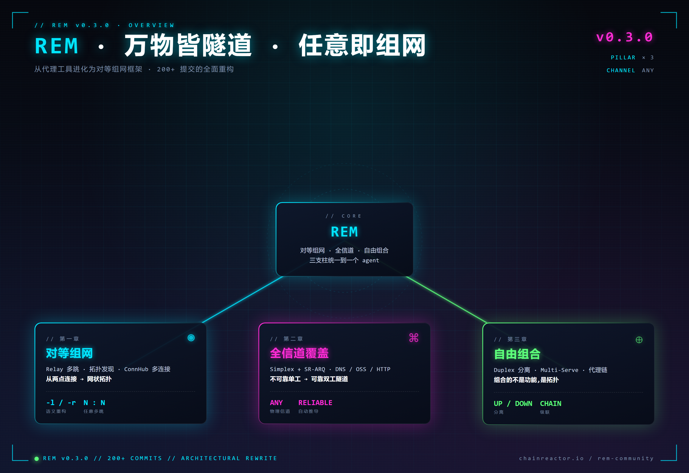
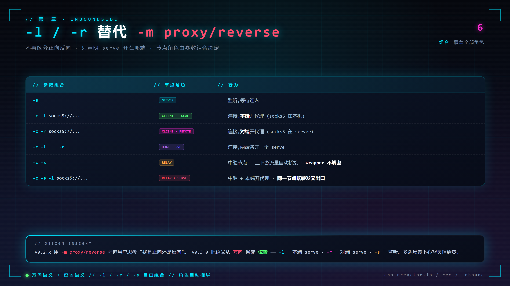
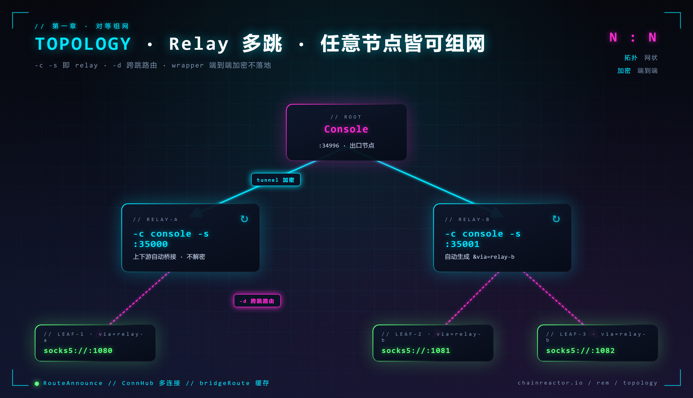
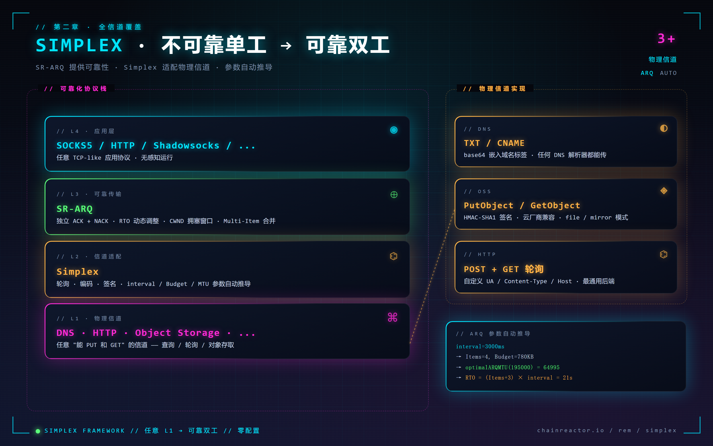
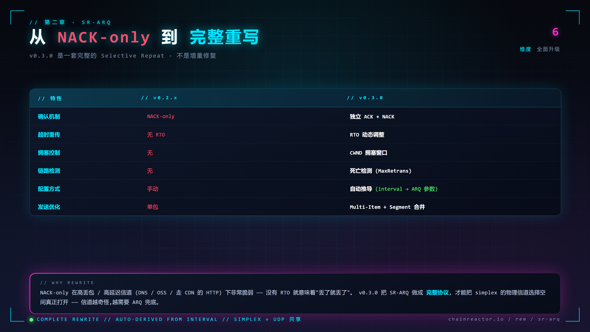
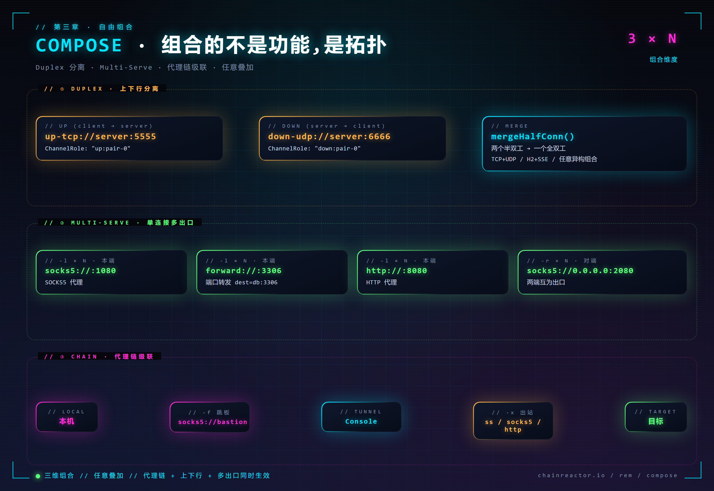

Rem v0.3.0 对等组网与全信道覆盖
前言¶
距离上一个版本 v0.2.4 过去了 10 个月，200+ 次提交。v0.3.0 不是一次功能更新，而是一次**重新定义 rem 是什么**的重构——从一个"点到点的代理工具"，进化为一个**对等组网框架**。
过去的代理工具总是把问题切成"正向 / 反向"、"客户端 / 服务端"、"代理 / 隧道"。这些语义在单点场景下还能用，但只要场景稍微复杂一点——多跳、非常规信道、上下行分离、代理链级联——这些二分法就会变成使用者的心智负担。v0.3.0 的核心是把这些二分法统统拿掉，换成**三个正交的维度**：
- 对等组网 —— 任意节点都可以是 relay / leaf / console，角色由参数组合推导，不需要预先规划
- 全信道覆盖 —— simplex 框架把 DNS 查询、对象存储、HTTP 轮询等不可靠单工信道升格为可靠隧道
- 自由组合 —— duplex 上下行分离、multi-serve、代理链级联，所有能力可以任意叠加
三个维度互相正交、任意组合，rem 的能力包络呈指数级扩张。
代码仓库: https://github.com/chainreactors/rem-community
使用文档: https://chainreactors.github.io/wiki/rem/usage/
rem 是什么
rem 是 chainreactors 红队基础设施中的**网络层核心**——一个把 tunnel / proxy / 组网揉到一起的框架。既可以作为独立的代理工具使用，也可以通过 SDK / 动态库嵌入到 IoM 等上层系统。
v0.3.0 之后，rem 变成了一套可以按需组装的网络基础设施：

一、对等组网 —— 从代理工具到网状组网¶
"正向 / 反向" 是代理工具的历史包袱。在单点部署下它还能凑合用，一旦进入多跳、级联、混合拓扑的场景，这个词本身就是 bug。v0.3.0 不再区分方向，只描述 serve 开在哪端——节点角色由参数组合自动推导。
InboundSide —— 从"方向语义"到"位置语义"¶
v0.2.x 的 -m proxy / -m reverse 要求用户先回答一个问题："我到底是正向还是反向？"在多跳网络里这个问题根本没有标准答案。v0.3.0 用 -l（本端 serve）和 -r（对端 serve）替代，语义从"方向"换成"位置"，心智负担清零：

六种参数组合覆盖所有节点角色。不再需要在脑子里构造"正向 / 反向"的图像，只需要声明 serve 开在哪端。
Relay —— 任意节点皆可组网¶
组合出 relay 最惊艳的地方是：它不是一个独立的模式，而是 -c -s 自然组合出的结果。任意节点上同时声明"连上游 + 监听下游"，它就自动承担中继职责，上下游流量透明桥接，wrapper 加密保持端到端不在中继层解密。

# Console —— 根节点
./rem -s tcp://0.0.0.0:34996
# Relay-A —— 连上游 + 监听下游,自动成为中继
./rem -c tcp://console:34996 -s tcp://0.0.0.0:35000 -a relay-a
# Leaf-1 —— 连 Relay-A,流量从 Console 出去
./rem -c tcp://relay-a:35000 -l socks5://127.0.0.1:1080
relay 建立后会自动生成带 &via=relay-a 的 link，-d 参数还能跨多跳精确路由到指定节点：
./rem -c tcp://gateway:34996 -d "backend" -l socks5://127.0.0.1:1080
拓扑发现 —— 网络以 JSON 图暴露¶
每个 Agent 通过 RouteAnnounce 消息自动上报，整张网络以 JSON 图的形式可观测，包含节点角色、服务清单、流量统计、父子关系——既方便 operator 排障，也让自动化系统能读懂拓扑：
{
"nodes": [
{"id": "relay-a", "type": "relay", "via": "console",
"services": [{"protocol": "socks5", "address": "127.0.0.1:1080"}],
"bytes_in": 1048576, "children": ["leaf-1"]}
],
"edges": [
{"from": "console", "to": "relay-a", "layer": "tunnel"}
]
}
ConnHub —— 多连接管理¶
ConnHub 是 v0.3.0 全新的多连接抽象：同一个节点可以同时建立多条异构连接，统一由 bridgeRoute 路由缓存调度，支持连接级的精确路由、负载均衡和故障转移。
# 三条连接混合协议 + round-robin 负载均衡
./rem -c tcp://srv1:34996 -c tcp://srv2:34996 -c ws://srv3:8080/tunnel \
--lb round-robin -l socks5://127.0.0.1:1080
# fallback 策略 —— 优先第一条,故障时自动切换
./rem -c tcp://primary:34996 -c udp://backup:34996 --lb fallback
多协议混用 × 多策略调度——这在 v0.2.x 是几条手动维护的连接，在 v0.3.0 是一个声明式的参数组合。
二、全信道覆盖 —— 把不可靠单工升格为可靠隧道¶
这是 v0.3.0 最具技术挑战的部分。
真实对抗环境里，出网渠道往往是高度受限的——只能查 DNS、只能调云厂商的 API、只能走 HTTP 轮询。这些信道的共同特点是**不可靠、单工、延迟高**。传统思路是为每种信道写一个定制化隧道，碎片化严重。v0.3.0 的做法是建立一个**通用的可靠化协议栈**，把 ARQ、窗口、分片、拥塞控制抽成独立一层，任何不可靠单工信道都能接入。

应用层（SOCKS5/HTTP/...）不需要知道底下跑的是 DNS 还是 OSS——simplex 把这层抽象彻底抹平。
参数自动推导¶
simplex 会根据 URL 参数自动推导最优 ARQ 配置，operator 不需要手工调参：
interval=3000ms → Items=4, Budget=780KB
→ optimalARQMTU(195000) = 64995
→ RTO = (Items+3) × interval = 21s
SR-ARQ —— 完全重写而不是增量修复¶
v0.2.x 的 SR-ARQ 是一套 NACK-only 的简化实现，只能跑 UDP 隧道，跑到 simplex 场景就会完全失效。v0.3.0 是**从零重写**的完整 Selective Repeat——独立 ACK + NACK、RTO 动态调整、CWND 拥塞窗口、死亡检测、Multi-Item 合包：

这不是一次打补丁，是把可靠传输这件事**从玩具级做到了工业级**。
三种物理信道¶
DNS Simplex —— 通过 DNS TXT/CNAME 记录传输，base64 编码嵌入域名标签：
./rem -s "simplex+dns://0.0.0.0:5353/tunnel.example.com"
./rem -c "simplex+dns://8.8.8.8:53/tunnel.example.com" -l socks5://127.0.0.1:1080
OSS Simplex —— 通过阿里云 OSS 的 PutObject / GetObject 传输，HMAC-SHA1 签名，支持 file / mirror 模式。走云厂商 API 的好处是流量完全混在正常业务里，几乎没有识别特征：
./rem -s "simplex+oss:///rem?endpoint=oss-cn-hangzhou.aliyuncs.com&bucket=my-bucket&ak=...&sk=..."
./rem -c "simplex+oss:///rem?endpoint=...&bucket=...&ak=...&sk=..." -l socks5://127.0.0.1:1080
HTTP Simplex —— 最通用的后端，HTTP POST/GET 轮询，自定义 UA / Content-Type / Host，适配绝大部分 CDN 和反向代理：
./rem -s "simplex+http://0.0.0.0:8080/tunnel?interval=100&max=131072"
./rem -c "simplex+http://server:8080/tunnel?interval=100" -l socks5://127.0.0.1:1080
lolc2 —— 任意数据交换信道都能当隧道
只要目标环境存在任何一种可供双向读写的数据通道（云存储、笔记服务、消息队列、GitHub Issues……），按 simplex 协议接入就能作为代理隧道使用。参考 https://lolc2.github.io/。
新传输层¶
除了 simplex 框架，v0.3.0 还新增了四种 first-class 传输：
- DNS Tunnel —— 基于 KCP 的全双工 DNS 隧道（不同于 DNS Simplex，这是直接的 DNS 查询隧道，延迟更低）
- StreamHTTP —— SSE 下行 + POST 上行，专为 CDN / 反向代理场景设计，内置重放缓冲
- HTTP/2 —— h2 多路复用，单 TCP 连接并发多流，h2c 明文 + h2s TLS 双模式
- Memory —— 进程内
net.Pipe，用于 C 库集成（-buildmode c-shared），零拷贝跨语言调用
./rem -s dns://0.0.0.0:53/tunnel.example.com # DNS tunnel
./rem -s streamhttps://0.0.0.0:8443/tunnel # StreamHTTP
./rem -s h2s://0.0.0.0:8443/tunnel # HTTP/2 TLS
从 simplex 的"把不可靠做成可靠"，到这四种新传输的"把常见协议压成隧道"——v0.3.0 的传输层目标只有一个：把出网能力的上限推到所有物理可能。
三、自由组合 —— 组合的不是功能，是拓扑¶
如果说前两章是在单个维度上把能力做深，这一章就是让不同维度**彼此正交、任意叠加**。

duplex、multi-serve、proxy-chain 这三件事在传统代理工具里通常是互斥的——你要么上下行合并、要么单信道、要么不挂代理。v0.3.0 把它们拆成三个独立的参数族，任意组合都能工作。
Duplex —— 上下行分离¶
上传和下载可以走完全不同的信道。up- 标记上行（client→server），down- 标记下行（server→client），内部通过 mergeHalfConn() 把两个半双工连接合并为一个全双工连接：
# TCP 上行, UDP 下行 —— 规避对单一协议的检测
./rem -s up-tcp://0.0.0.0:5555 -s down-udp://0.0.0.0:6666
./rem -c up-tcp://server:5555 -c down-udp://server:6666 -l socks5://127.0.0.1:1080
Login 消息通过 ChannelRole 字段（"up:pair-0" / "down:pair-0"）完成方向配对。协议可以随便混搭：TCP+UDP、HTTP+WebSocket、StreamHTTP×2……**上下行独立定制特征**在红队场景下几乎是必杀技。
Multi-Serve —— 一条连接开多个 serve¶
-l 和 -r 都支持重复指定，一条隧道上可以同时开启多个不同协议的 serve，各自独立工作：
# 本端同时开 SOCKS5 + 端口转发 + HTTP 代理
./rem -c tcp://server:34996 \
-l socks5://127.0.0.1:1080 \
-l forward://127.0.0.1:3306?dest=db:3306 \
-l http://127.0.0.1:8080
# 两端同时开 SOCKS5,互为出口
./rem -c tcp://server:34996 -l socks5://127.0.0.1:1080 -r socks5://0.0.0.0:2080
代理链级联¶
-x 串联出站代理，-f 为 Console 连接指定代理，两者都支持重复指定按顺序级联。整条流量路径完全由命令行声明：
# 出站经过两层代理
./rem -c tcp://server:34996 -x socks5://proxy1:1080 -x http://proxy2:8080
# Console 连接走跳板
./rem -c tcp://server:34996 -f socks5://bastion:1080
# 混合 —— Shadowsocks 做出站代理
./rem -c tcp://server:34996 -x ss://aes-256-gcm:password@proxy:8388
流量路径一览：本地 → -f 代理链 → Console → Tunnel → -x 代理链 → 目标。
Shadowsocks & Trojan —— 一等公民¶
rem 内置了完整的 Shadowsocks 和 Trojan serve，不是包装层而是原生实现，可以和代理链、multi-serve 联合使用：
./rem -c tcp://server:34996 -l ss://aes-256-gcm:password@127.0.0.1:8388
./rem -c tcp://server:34996 -l trojan://password@127.0.0.1:443
自由组合的威力
Duplex × Multi-Serve × Proxy-Chain × Relay——四个维度每个 N 种选择，最终的拓扑空间是 N⁴ 级别。v0.3.0 把这种组合自由度变成一行命令能表达的东西。
四、可靠性 —— 让 tunnel 经得住折腾¶
真实对抗环境里，网络不稳、server 重启、goroutine panic 是常态。一个可靠的 tunnel 框架不应该让 operator 手动处理这些场景。v0.3.0 在可靠性上做了四件事：
Server 热重连 —— server 重启后通过 RST 消息主动通知 client，client 自动重建连接，bridge retry 保证 serve 层也能恢复，不需要手动拉起 client。
指数退避重连 —— 默认无限重连，10 秒起始，上限 300 秒，每次 interval×2，±25% 随机抖动避免集群雪崩：
./rem -c "tcp://server:34996?retry=10&retry-interval=5&retry-max-interval=120"
Agent Panic 恢复 —— 所有关键 goroutine 通过 SafeGoWithRestart() 包装，panic 后自动重建 agent 连接而不是整个进程崩溃。
动态重配置 —— Reconfigure 协议消息支持运行时修改 tunnel 参数（如 simplex 轮询间隔），无需断开重连：
Agent → Reconfigure{interval: 5000} → Server
五、内部重写 —— 去 protobuf、去 hashicorp、上性能¶
除了架构层面的重构，v0.3.0 也把底层该啃的硬骨头都啃了。所有外部依赖都是潜在的供应链风险、体积成本和性能瓶颈——这一章是对依赖链的一次彻底清洗。
Protobuf 移除¶
替换 protobuf codegen 为手写 binary marshal（varint + field tagging），wire 格式兼容。消除 protoc 构建依赖，二进制体积进一步缩小。
Yamux 内置¶
替换 hashicorp/yamux 为内置 x/yamux，引入 sync.Pool 优化 stream 缓冲区。wire 协议兼容，操作无感。
性能优化¶
- cio.Join —— 64KB buffer pool，减少大文件传输场景下的 GC 压力
- Token Bucket ——
sync.Cond替代 1ms 自旋，CPU 占用显著下降 - SOCKS5 ——
bufio.Readerpool，减少 handshake 阶段的内存分配 - HTTP Transport —— server→client 投递路径重写，3~5 倍性能提升
流量统计¶
cio.StatsConn 透明包装 net.Conn，250ms 桶滑动窗口平滑采样，提供 BytesIn/Out + RateInBps/RateOutBps + LastActive。Agent 聚合子节点流量，拓扑图上每个节点都能看到实时吞吐。
WireGuard 自举¶
SHA256(pubkey) 自动推导 tunnel IP（100.64.x.y）——无需手动分配 IP 段，直接上 WireGuard 就能组网。
构建系统¶
所有能力通过 build.sh 参数化，支持编译期内置默认值（适合嵌入部署）：
bash build.sh --full # 全功能
bash build.sh -buildmode c-shared # 动态库
bash build.sh -buildmode c-archive # 静态库
bash build.sh -c "tcp://server:34996" -l "socks5://127.0.0.1:1080" -q # 编译期内置默认值
rem --list 列出所有已注册组件。URL query 参数可以配置一切：tcp://host:port?tls&wrapper=aes&retry=5&lb=round-robin——声明式配置贯穿整个框架。
破坏性变更¶
-m proxy/-m reverse已废弃，使用-l/-r替代（语义从"方向"换成"位置"）- Yamux 从
hashicorp/yamux替换为x/yamux，wire 协议兼容 - Protobuf 替换为手写 marshal，wire 格式兼容
结语 —— 万物皆隧道 · 任意即组网¶
v0.3.0 是 rem 从**代理工具**蜕变为**组网框架**的关键一步。
- **对等组网**把"正向 / 反向 / 客户端 / 服务端"这一套上古语义彻底扔掉，节点角色由参数组合自行推导
- **全信道覆盖**让 DNS、对象存储、HTTP 轮询这些不可靠单工信道都能当隧道用，simplex + SR-ARQ 是通用的可靠化底座
- **自由组合**让 duplex、multi-serve、proxy-chain 这几个正交维度可以任意叠加，拓扑空间呈指数级扩张
这三件事加起来，rem 基本覆盖了所有 tunnel / proxy 场景——从教科书上的反向代理到 lolc2 级别的偏门信道。
rem 是 chainreactors 红队基础设施中的网络层核心，与 IoM 深度集成，也可以独立使用。v0.3.0 之后，网络侧的对抗能力不再是一堆独立工具的拼凑，而是一个统一框架的组合输出。